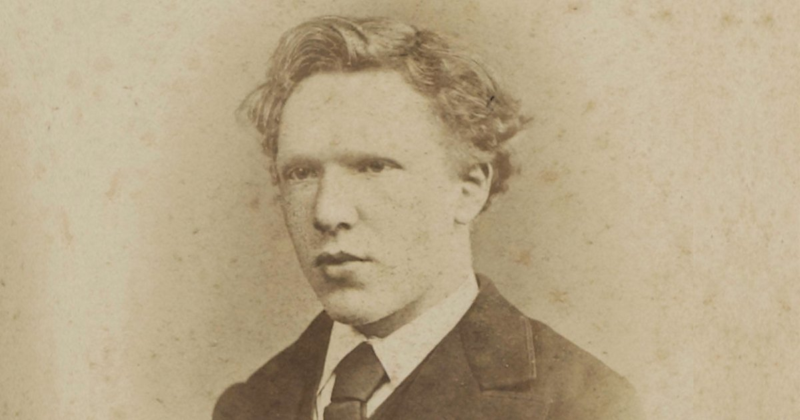

Vincent Van Gogh
Vincent Van Gogh was born on 30 March 1853 in Zundert in the southern Netherlands, the son of a pastor. In 1869, he took his first job, working in the Hague branch of an international art dealing firm. He began to write to his younger brother Theo, a correspondence which continued for the rest of Van Gogh's life. Van Gogh is now one of the most well-known post-Impressionist painters, although he was not widely appreciated in his lifetime.
Van Gogh's job took him to London and Paris, but he was not interested in the work and was dismissed in 1876. He briefly became a teacher in England, and then, deeply interested in Christianity, a preacher in a mining community in southern Belgium.
In 1880, at the age of 27, he decided to become an artist. He moved around, teaching himself to draw and paint and receiving financial support from Theo. In 1886, Van Gogh joined Theo in Paris, and met many artists including Degas, Toulouse-Lautrec, Pissarro and Gauguin, with whom he became friends. His style changed significantly under the influence of Impressionism, becoming lighter and brighter. He painted a large number of self-portraits in this period.
In 1888, Van Gogh moved to Provence in southern France, where he painted his famous series 'Sunflowers'. He invited Gauguin to join him but they soon began to quarrel and one night, Van Gogh threatened Gauguin with a razor. Deeply remorseful he then cut off part of his own ear.
This was the first serious sign of the mental health problems that were to afflict Van Gogh for the rest of his life. He spent time in psychiatric hospitals and swung between periods of inertia, depression and incredibly concentrated artistic activity, his work reflecting the intense colours and strong light of the countryside around him.
On 27 July 1890, again suffering from depression, Van Gogh shot himself. He died two days later.